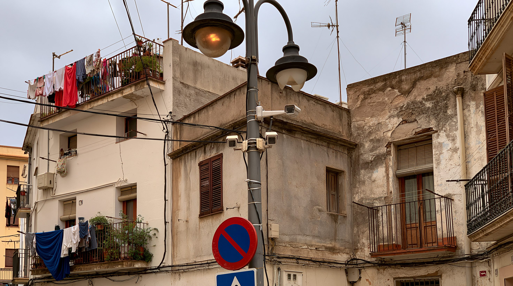
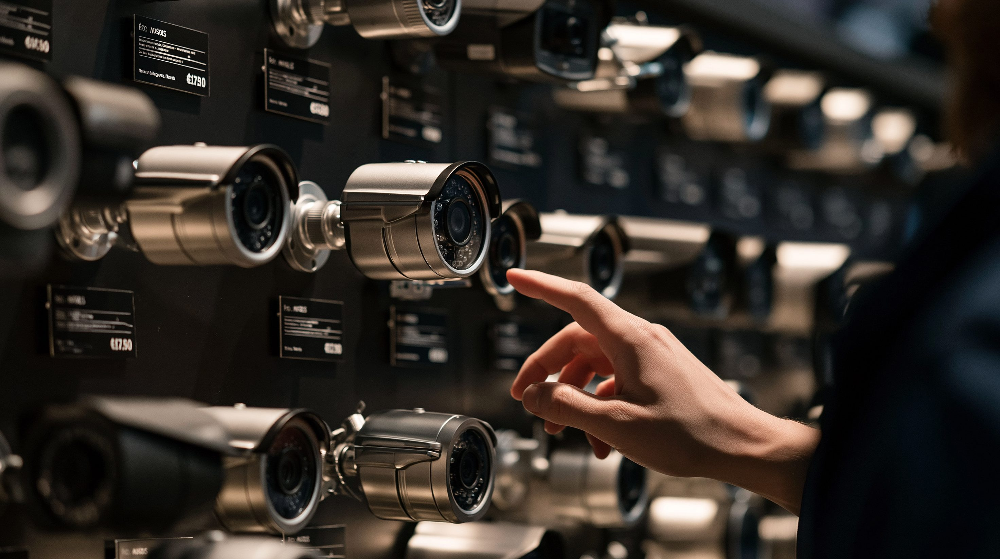
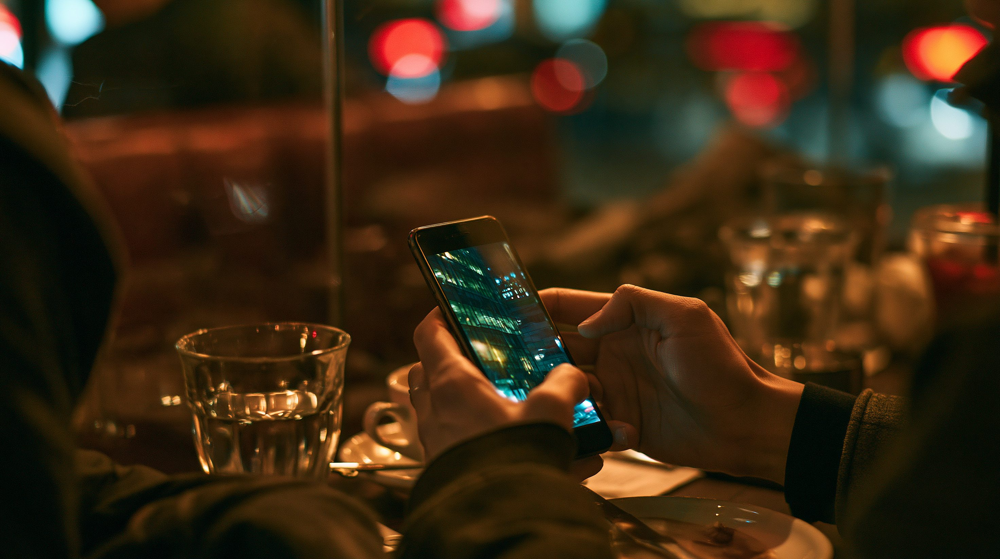

01論点 — 「監視の輸出」は、一つの現象ではない
2026年8月13日、Appleは新たな脅威通知を送った。対象は110か国の利用者で、累計の通知先は150か国を超えた。受け取るのは、記者・活動家・政治家・外交官——「その人が何者であるか、何をしているか」を理由に個別に狙われた人々である。
この通知が可視化するのは、監視技術の輸出という産業の一断面にすぎない。同じ言葉で語られるものの中には、まったく性質の違う二つの商品が混在している。一方は、街をまるごと見張る設備。もう一方は、特定の一台に忍び込むソフトである。
この二つを一括りに「監視技術」と呼ぶことが、議論を鈍らせてきた。まず、分けるところから始めたい。
- 買い手
- 都市、内務省、警察機構
- 値段の桁
- 数千万〜数億ドル（融資込み）
- 効くとされる規制
- 政府調達の禁止・機器の排除
- 被害の形
- 誰が写ったかを本人が知らないまま蓄積される
- 買い手
- 情報機関、法執行機関
- 値段の桁
- 非公開。標的1件あたりの課金が一般的
- 効くとされる規制
- 制裁・輸出許可・エンティティリスト
- 被害の形
- 外部の調査で見つかるまで、存在しないことになる
制裁も、調達禁止も、大統領令も出そろった。輸出許可は国家が一件ずつ審査している。それでも監視技術の輸出は止まっていない。規制は、どこで空振りしているのか。

02タイムライン — 暴露と制裁の10年、そしてその後
この10年、監視技術の乱用はほぼ一定のリズムで暴かれてきた——調査機関が見つけ、報道が広がり、政府が制裁を科す。だが2025年以降、リズムの後半（制裁の側）がほどけ始めている。
1通のSMSから — 一人の活動家が、三つの製品に狙われていた
人権活動家アフメド・マンスールの携帯に届いた不審なリンクを、トロント大学の研究機関シチズン・ラボが解析するとNSO GroupのPegasusだと判明した。同ラボは既に2012年にFinFisher、2014年にHacking Teamの運用網も記録しており、マンスールは過去にその両方の標的でもあった。
45か国 — 一社の製品が、世界地図に広がっていた
シチズン・ラボが2年間のインターネット走査の結果を公表し、Pegasusの運用に関係する痕跡が45か国で見つかった——個別の事件でなく、市場として存在することが示された。
もう一方の輸出路 — 都市ごと納入するモデルが数字になる
カーネギー国際平和財団の調査で、少なくとも75か国がAI監視技術を導入していると報告された（供給元別の内訳は04参照）。同じ年、ウガンダはHuaweiの顔認証システムに1億2,600万ドルを投じている。
ペガサス・プロジェクトと、エンティティリスト入り
国際報道連合がPegasusの標的候補とされる電話番号リストをもとに調査を公表し、各国の記者・政治家が並んでいたことを報じた。同年11月、アメリカ商務省はNSO GroupとCandiruをエンティティリストに追加した。
大統領令14093 — 「買わない」と決めることの意味
バイデン大統領が、商用スパイウェアの連邦政府による使用を禁じる大統領令14093に署名した（定義は01参照）。狙いは自国の職員の保護と、業界への需要そのものの抑制である。
Intellexaへの制裁 — 「説明責任を避けるための企業の網」
アメリカ財務省がPredatorを手がけるIntellexa連合と創業者タル・ディリアンらを制裁対象に指定し、この連合を「責任の所在をぼかすために設計された不透明な企業の網」だと説明した。制裁の対象が「会社」でなく「網」だという認識は、この時点ですでにあった。
イタリア — 民主国家の内側で記者が狙われる
1月、WhatsAppが約90人の利用者にParagonの「Graphite」で狙われたと通知した。6月にはシチズン・ラボとアムネスティが記者フランチェスコ・カンチェッラートらの被害を確認、議会の監督委員会が使用を認めた報告ののち、Paragonは契約を打ち切った。
反転が始まる — 差止命令、米資本による買収、そして制裁解除
10月、連邦地裁がNSOにWhatsAppを標的にすることを恒久的に禁じる命令を出した。同じ月、アメリカの投資家グループがNSOの支配権を取得した——ブラックリスト企業が、アメリカ資本の会社になった。12月には財務省がIntellexa関連の制裁の一部を解除する。
命令が効かないことが、記録に残る
1月28日に差止命令が発効。だがNSOに関連する活動は2月3日から7日にかけて再開し、4月にも第二波があった。6月8日、Metaは法廷侮辱を申し立てた（上院の追及は03参照）。「面の監視」側でも6月26日、連邦通信委員会がHuawei・Hikvision・Dahuaの旧型機器にも輸入認可を認めない措置を決めた。そして8月13日、Appleの通知が110か国に届く。

036つの視点 — 売る側、買う側、規制する側、見つける側
この産業には、悪役と被害者だけがいるわけではない。売る国には売る理屈が、買う国には買う理由がある。6つの立場を、それぞれの言い分のまま並べる。
| 立場 | 基本スタンス | 最大の主張 | 最大の関心事 |
|---|---|---|---|
| 中国 | 面を売る側 | 治安インフラの提供であり、運用は購入国の主権 | 輸出産業の規模と、運用モデルの標準化 |
| イスラエル | 点を許可する側 | 輸出は国家が一件ずつ審査している | 外交カードとしての価値と産業の維持 |
| 導入国（グローバルサウス） | 選んで買った側 | 押しつけではなく、安く早いから購入した | 目に見える治安対策と、条件の緩い資金 |
| アメリカ | 規制の主体、かつ買い手 | 危険な製品は使わないが、産業の根絶は目的でない | 自国の職員と市民が標的にされないこと |
| 欧州 | 書いた側が、使っていた | 規範を整備したが、域内で乱用が確認された | 法の支配の信頼性と加盟国の権限の折り合い |
| 調査機関・プラットフォーム | 見つける側 | 見つけるまで被害は存在しないことになる | 被害の記録と、説明責任の追及 |

04データ・統計 — 二つの輸出路の、それぞれの広がり
面の監視 — 供給元別に見た導入国の数（2019年時点）
Huawei一社が少なくとも50か国にAI監視技術を供給し、非中国系最大のNECの14か国を大きく引き離す（合計は下のstat参照）。調査時点は2019年で、その後の広がりは反映していない。
出典：カーネギー国際平和財団「The Global Expansion of AI Surveillance」（2019年9月）
点の監視 — 調査で特定された「疑わしい政府顧客」の広がり
いずれもトロント大学シチズン・ラボが公表した「顧客とみられる政府がある国」の数。年次も手法も異なり単純比較はできないが、どの製品も数十か国規模で使われてきたことが分かる（Graphiteの6か国は2025年3月時点）。
出典：シチズン・ラボの個別報告 — Hide and Seek（2018年9月）／Mapping FinFisher's Continuing Proliferation（2015年10月）／Running in Circles（2020年12月）／Mapping Hacking Team's "Untraceable" Spyware（2014年2月）／A First Look at Paragon（2025年3月）
05深掘り — 規制は、どこで空振りしているのか
制裁の網は年々細かくなっている。それでも輸出は続いている——安く早い治安対策として、効果不問のまま買われ続けるからだ（実例は03「導入国」参照）。加えて、規制の設計そのものに埋め込まれた3つのずれが、空振りを生む。
監視技術の輸出を止める方法は、供給側を狙う三つの手段——制裁・調達禁止・輸出許可——に集中してきた。だが2026年に見えてきたのは、供給側だけを対象にする限り、法人は名を変え、命令は6日で破られ、需要は残るという事実である。効きうるとすれば、買う側を見えるようにすること——どの機関が何を、いくらで調達したのかを開示させる方向だろう。その試みはすでに動いている。イギリスとフランスが2024年に立ち上げたポールモール・プロセスは、国家向け行動規範を2025年4月に採択し27か国が署名した（産業側は2026年11月公表予定）。ただしいずれも法的拘束力を持たず、守るかどうかは各国と各社の自主性に委ねられている。皮肉にも、いま被害を可視化しているのは政府ではなく、大学の研究機関と端末を作る企業である。Appleの通知が110か国に届いたという事実は、この産業の広がりと同時に、それを数えているのが誰かも示している。